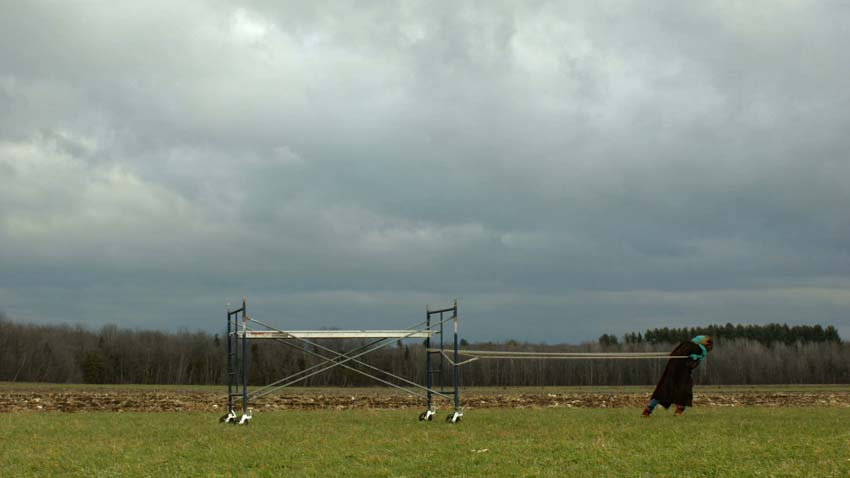
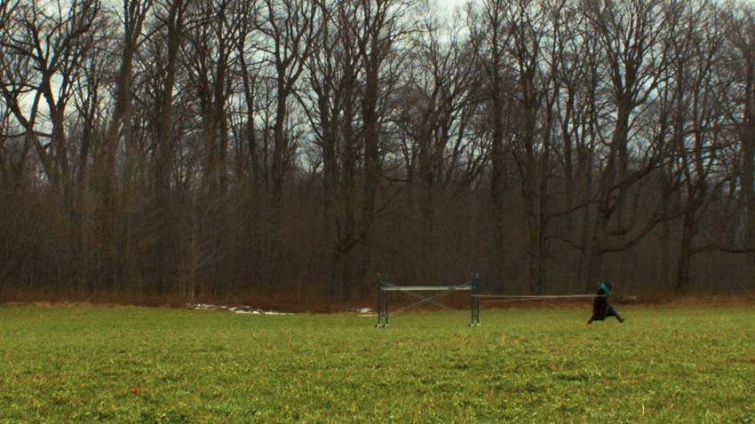
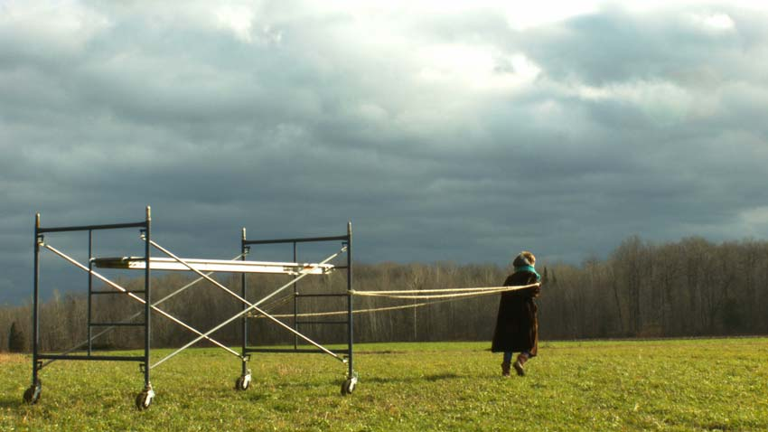

Cette vidéo suit une femme qui charrie son énorme et encombrant échafaudage à travers champs épurés et terres labourées.
Ce geste à l'accent métaphoriques se répète d’un lieu à l’autre dans une mobilité continue. L’échafaudage, véritable structures temporaires de constructions dans les paysages urbains, caractérise la mise en spectacle du monde qui nous entoure. En tirant son échafaudage, elle transporte à la fois son identité propre et une mémoire collective qui rappelle une structure à laquelle l’être est assujettis et se joint en tension avec les transformations réciproque entre l'imaginaire individuel, collectif et fictif.



Le vent et l’éclairage filtré par le mouvement des nuages amplifient cette tension alors que la lenteur des séquences tente plutôt de mettre le spectateur dans l’attente et la contemplation. Le déplacement du référent d’un espace singulier à un autre décontextualise le récit et nous fait basculer dans la métaphore alors que s’opposent le paysage et l’échafaudage.
Si vous désirez voir cette vidéo, envoyez moi un courriel et je vous enverrez un lien.